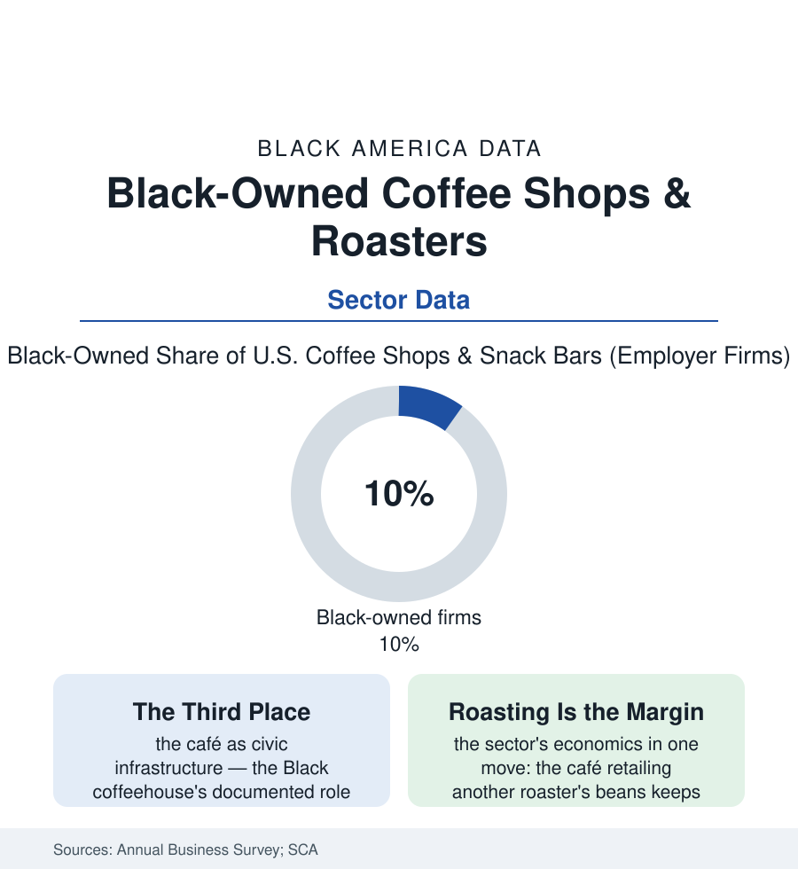

Black Business
Black-Owned Coffee: Reclaiming a Trade That Ran on Other People's Beans
Coffee built empires on African beans and Black labor for centuries; the Black-owned café and roaster movement is the industry's downstream finally changing hands. The business data.

Coffee is an African crop — domesticated in Ethiopia, carried around the world by empire, and produced for centuries by Black hands that owned almost none of its trade. The American café end of that trade is where the ownership is finally moving: Black-owned coffee shops and roasters, counted in the Annual Business Survey's food-service tables and mapped by the community directories that now list hundreds of them, are building the sector's most deliberate ownership story — from the bean's downstream end backward toward its source. This article reads the coffee file. The movement is young enough that its elders are in their forties and old enough, now, to have a data trail worth reading.
The Sector's Shape: Cafés, Roasters, and the Shelf
The business data sort the sector into three tiers with three economics: the café (the neighborhood shop — the lease, the espresso machine's five-figure ticket, the morning rush's brutal concentration in the sales data, the food and labor arithmetic of the restaurant file in miniature), the roaster-retailer (the shop that roasts — owning the product's margin and the brand, wholesaling to the cafés that don't, the tier where the sector's growth stories concentrate in the trade press), and the packaged brand (the bag on the grocery shelf and the subscription box online — the CPG tier the venture and accelerator files touch, competing for the shelf the buying-power data say Black consumers stock). The directories' geography maps the movement's centers (Oakland, Chicago, Atlanta, Houston, Brooklyn, the DMV in the listings' density) and its cultural form is consistent enough to count as a format: the Black café as designed civic space — the gallery wall, the bookshelf, the meeting room the church basement used to be — the 'third place' literature's textbook case, sited in the neighborhoods the national chains' site models historically skipped (the coffee-desert map the urban researchers draw against the same red lines as the grocery file's). The consumption base is the sector's own data: the National Coffee Association's surveys showing Black Americans' coffee consumption rising and premiumizing across the recent waves — the specialty segment's growth demographic, buying a product whose story, for the first time at scale, includes people who look like them owning the shop.
The Chain Home: Sourcing as the Sector's Argument
What distinguishes this sector's file from the restaurant article's is the supply chain's direction: the Black roaster movement's signature practice is sourcing as repatriation — the direct-trade relationships with Ethiopian, Kenyan, Rwandan, Colombian, and Brazilian producers in the roasters' own accounts, the Black-owned importers entering the chain's middle, the storytelling on the bag tracing the bean to the farm the crop's history began on. The economics are the movement's spine as much as the ethics: the green-coffee commodity market's price (set in New York, indifferent to the farmer in the C-market data) against the specialty premium the direct relationship pays — the sector arguing, with invoices, that the margin was always there and merely allocated elsewhere. The institutional layer is forming in the file's recent pages: the roasters' associations and cupping communities, the barista-competition and training pipelines (the specialty industry's own diversity data thin at the championship tier — the pipeline argument in an apron), the accelerator and shelf-placement programs of the CPG tier, and the chains' countermove (the global brands' diversity-supplier programs and Black-history-month bags in the trade data — the incumbent's answer to a movement being, as usual, a purchase order). The sector's fragility is the café tier's own: the lease against the morning rush, the pandemic's remote-work crater in the downtown dayparts in the sales data, the gentrification double-edge (the Black café as the amenity that raises the block's rents against itself — the cities file's saddest mechanism, in a coffee cup).
Reading the Coffee Data
A crop that crossed the world in other people's ships, retailing at last in its own people's shops: the coffee file is the business section's smallest sector and its most complete argument — that the value of a Black product was never in question, only its ownership. The survey counts the firms. The directories count the rooms. And every bag with a farm's name on it is a ledger line the commodity market never used to print.
More in Black Business
Black-Owned Businesses: Counts, Receipts, and the Representation Gap
About 161,000 Black-owned employer firms and three million solo ventures: how the Census Bureau counts Black business ownership, where firms concentrate, and the gap between population share and business share.
Black Median Net Worth: The Wealth Gap in Federal Reserve Data
The Federal Reserve puts Black median family net worth at $44,900, against $285,000 for White families — about 16 cents on the dollar. The widest gap in economic data.
Black Buying Power: The $1.8 Trillion Consumer Economy
Black buying power is estimated at about $1.8 trillion — larger than the economy of most nations. What the figure measures, who produces it, and what it buys.
Source: U.S. Census Bureau Annual Business Survey; Specialty Coffee Association; National Coffee Association consumption data; industry directories of Black-owned roasters.